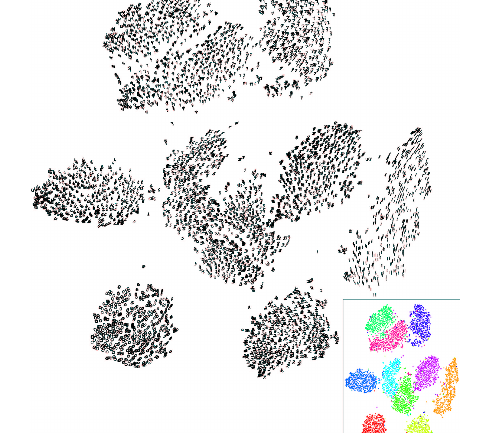

t-SNE (van der Maaten and Hinton, 2008) turns high-dimensional data into a 2D map that keeps each point's nearest neighbors close. On a Swiss roll, a sheet curled up in 3D, PCA keeps the directions of largest spread, and no straight projection unrolls the curve.
Figure 1. Each box's marker is the number of the section that teaches it.
t-SNE runs once per dataset, offline. It measures neighbors once, then moves every map point for a fixed number of steps (1,000 in the paper, 1,500 in the tool). An exact step compares all N2 pairs; scikit-learn's default Barnes-Hut approximation costs about N log N. New points mean a new run.
1 t-SNE overview
t-SNE does not project. Each point's distances in the original high-dimensional space become neighbor probabilities, and gradient descent moves randomly placed map points until the map's neighbor probabilities match, lowering the KL divergence (Kullback-Leibler), a measure of how far one probability distribution is from another.
Figure 2. Close neighbors 1 land far apart at the random start 2; the moves 3 bring them close again.
2 The t-SNE algorithm
Four parts build the map: neighbor probabilities in the data, matching probabilities on the map, a cost comparing them, and its gradient.
2.1 Neighbor probabilities in the data
Point i puts a Gaussian bump on its distances, so near points get high probability. Each width σi is tuned so the point's perplexity, roughly how many neighbors it counts, hits one setting: narrow in dense regions, wide in sparse ones. On the MNIST digits of Section 4, each a point with 784 pixel values, a perplexity of 30 means about 30 effective neighbors, an entropy of about 4.9 bits; the paper suggests 5 to 50.
t-SNE first turns distances between points into probabilities that they are neighbors.
aj|i = exp(−dij²2σi²)
A Gaussian bump of width σi measures how close j is to i, where dij is their distance in the original space.
pj|i = aj|iΣk≠i ak|i
Divide by the row total so point i's neighbor probabilities add up to one; the bar reads given.
Perp(Pi) = 2H(Pi), H(Pi) = −Σjpj|i log2pj|i
Pi is point i's row of probabilities and H its entropy in bits, which grows as σi widens. Spread evenly over k neighbors, H = log2k and the perplexity is exactly k. A binary search sets each σi to hit the chosen perplexity; the paper gives typical values of 5 to 50.
pij = pj|i + pi|j2N
Average the two directions into one joint distribution P over all N points, symmetric and still adding up to one (the paper's symmetric version).
So pij is the data’s neighbor map: close neighbors get most of the probability. The eq card in Section 2.2 builds the matching map in 2D.
2.2 Neighbor probabilities on the map
On the map, closeness uses a Student-t distribution, whose tail is much heavier than a Gaussian's. 2D has too little room to keep every medium distance, the crowding problem; the heavy tail lets moderately far pairs sit far apart on the map, so clusters do not pile into the middle. The two closeness curves at two map distances:
Closeness against map distance (illustrative distances, formula values; the Gaussian has width 1).
distance
Student-t closeness
Gaussian closeness
1
0.5
0.607
3
0.1
0.0111
In the 2D map, neighbor probabilities use a heavy-tailed curve so far points can sit far apart.
bij = (1 + ‖yi − yj‖²)−1
bij mirrors the Gaussian bump of the eq card in Section 2.1, with a heavier tail. Closeness of map spots yi and yj; it falls off slowly with distance, so far pairs can stay far.
qij = bijΣk≠l bkl
Divided by the total over all pairs, Q adds up to one like P, so the two compare entry by entry.
So qij is the map’s version of pij: at distance 3 the Student-t closeness is about nine times the Gaussian’s, so the map can spread clusters without paying much. The eq card in Section 2.3 compares the two.
2.3 The cost and its gradient
The cost adds up the mismatch over all pairs, and its gradient moves each map point. One illustrative pair of true neighbors placed too far apart on the map:
One illustrative pair at map distance 3.
quantity
value
data probability pij
0.01
map probability qij
0.001
its share of the cost
0.023
map closeness bij
0.1
pull per unit of offset
0.0009
t-SNE moves the map points to make the two neighbor maps match, measured by KL divergence.
C = Σi≠jpij·log pijqij
pij comes from the eq card in Section 2.1, and qij and bij from the eq card in Section 2.2. The cost C is the KL divergence from the data's distribution P to the map's distribution Q. A pair with a big pij but a small qij, true neighbors placed far apart, costs a lot; far pairs placed close cost little. The log ratio is zero when the two distributions agree on a pair and grows as qij falls below pij; weighting it by pij means mistakes on true neighbors dominate the cost.
∂C∂yi = 4·ΣjFij
The gradient that moves map point yi adds up one force Fij from every other point j.
Fij = (pij − qij)·bij·(yi − yj)
The force between i and j. When pij > qij the pair is pulled together; when qij > pij it is pushed apart. bij weakens the force for pairs already far apart on the map.
So the cost punishes splitting real neighbors, and its slope is a sum of pulls and pushes: the pair in the table has pij above qij, so it is pulled together. The card under Figure 3 runs the whole loop.
2.4 The steps on a toy Swiss roll
The Swiss roll is a toy. On the MNIST digits the same steps run unchanged, and Figure 5, the paper’s own map, shows what they give.
Figure 3. A toy Swiss roll, one piece per step; colors that stay together mean the map kept the neighbors.
The stepper runs the whole loop in order: the data’s neighbor chances, the map’s, the cost, and the forces that move the map.
aj|i = exp(−dij²2σi²)
Each line reads as in its own card, from the eq card in Section 2.1; the last three repeat the cost and forces of the eq card in Section 2.3. A Gaussian bump of width σi measures how close j is to i, where dij is their distance in the original space. Perplexity sets each σi, wide in a sparse region and narrow in a dense one.
pj|i = aj|iΣk≠i ak|i
Divide by the row total so point i's neighbor chances add up to one; the bar reads given.
pij = pj|i + pi|j2N
Average the two directions into one joint distribution P over all N points, so it is symmetric and still adds up to one (the paper's symmetric version).
bij = (1 + ‖yi − yj‖²)−1
On the map, closeness is a heavy-tailed bump of the map distance between spots yi and yj, so far pairs can stay far and clusters separate.
qij = bijΣk≠l bkl
The map's neighbor distribution Q is pair ij's closeness bij divided by the total over all pairs, so Q adds up to one like P and the two compare entry by entry. Moving one pair closer raises its share and lowers every other pair's.
C = Σi≠jpij·log pijqij
The cost C adds up, over every pair, pij times the log of pij over qij. The log is large when a true neighbor pair (big pij) gets little closeness on the map, so broken neighborhoods cost the most; a pair far apart in the data has a tiny pij and barely counts wherever it lands.
∂C∂yi = 4·ΣjFij
Each map point yi moves by the sum of its forces Fij.
Fij = (pij − qij)·bij·(yi − yj)
Pull when pij > qij, push when qij > pij, until the forces balance.
So the map settles where pij and qij agree, and colors that stay together mean the map kept the neighbors. End of the chain.
aj|i raw closeness of j to iσi point i's width, set by perplexityp neighbor chances in the original spacebij heavy-tailed closeness on the mapqij neighbor chances on the mapyi point i's spot on the map
The core loop takes the joint probabilities P and returns the map Y. In the first steps it multiplies P by a factor, early exaggeration, so true neighbors pull together hard and clusters form early: the paper uses 4 for 50 steps, scikit-learn 12 for 250, and this loop 4 for 250 so the motion stays visible. Momentum carries part of the last move into the next, which speeds up the layout (0.5, then 0.8 from step 250, as in the paper). The loop keeps a fixed learning rate and drops the paper's adaptive learning-rate scheme (Jacobs, 1988).
import numpy as np
T, EARLY = 1500, 250
EXAG, LR = 4, 200
N = len(P)
rng = np.random.default_rng(0)
Y = rng.standard_normal((N, 2))
Y *= 1e-4
V = np.zeros_like(Y)
for it in range(T):
early = it < EARLY
e = EXAG if early else 1
mom = 0.5 if early else 0.8
D = Y[:, None] - Y[None]
d2 = (D**2).sum(-1)
W = 1 / (1 + d2) # b_ij
np.fill_diagonal(W, 0)
F = (e * P - W / W.sum()) * W
Fv = F[..., None] * D
grad = 4 * Fv.sum(1)
V = mom * V - LR * grad
Y = Y + V
1Settings and a tiny random start Y.
2Exaggeration and momentum 0.5 for 250 steps, then momentum 0.8.
3Student-t values bij for every pair.
4Forces Fij and the gradient, the card in Section 2.
5Momentum step.
3 t-SNE on clustered data
The data are 300 points in 24 dimensions with 4 labels of 3 sub-groups each; t-SNE never sees the labels.
Figure 4. At perplexity 5 each label splits into its sub-groups (zoomed box); at 100 the labels pack tight. Show PCA draws the PCA projection, which mixes the sub-groups.
all gray, since t-SNE never sees the labels
true labels, never shown to t-SNE (3 shades: the 3 sub-groups in each)label Alabel Blabel Clabel D
Random start at iteration 0 of 1500.
4 t-SNE on MNIST digits
MNIST is a standard dataset of 70,000 handwritten digit images, each 28 by 28 pixels, so 784 numbers per point; the paper mapped 6,000 of them.

Figure 5. The paper's Figure 7 (numbered 6 in the preprint): the digits fall into ten groups with no labels used; neighbors came from all 60,000 training digits via random walks on a neighbor graph. JMLR 9:2579-2605.
5 t-SNE in practice
The common recipe runs PCA first, then t-SNE.
from sklearn.datasets import load_digits
from sklearn.decomposition import PCA
from sklearn.manifold import TSNE
digits = load_digits()
X = digits.data # (1797, 64)
X50 = PCA(50).fit_transform(X)
tsne = TSNE(perplexity=30)
tsne.set_params(random_state=0)
Y = tsne.fit_transform(X50)
print(tsne.kl_divergence_)
1Loads 1,797 digits and reduces them to 50 dimensions.
2Runs t-SNE with perplexity 30.
3Final KL divergence.
Setting
Where it enters
Raise it
Lower it
Default
perplexity
Width of each point's Gaussian in pij
Groups merge; near N every point is a neighbor
Groups split; near 1 only the nearest point counts
30 (docs suggest 5 to 50)
early_exaggeration
Multiplies P, first 250 steps
Clusters form tighter, farther apart
1 turns it off
12
learning_rate
Step size of each move
A round ball of evenly spaced points when too high
A dense cloud with few outliers when too low
"auto", the larger of N / 48 and 50
max_iter
Number of moves
More time to settle
Clusters not yet formed
1,000
TSNE's default init="pca" starts from the PCA layout instead of a random scatter; the paper and this page's tool start at random. method = "exact" costs N2 per step. The docs recommend reducing very wide data to about 50 dimensions first, as the snippet does.
Other t-SNE libraries define the learning rate 4 times smaller, so copy settings with care. Fix random_state to reproduce a map, and compare several perplexities.
6 Limits of t-SNE maps
Cluster sizes and gaps depend on settings. Change the perplexity and they move, so they are not evidence of real groups or distances.
Cluster the original features, not the map. Run k-means (which groups points around k centers) on the original features, then color the map by its labels.
A new random seed gives a different map. The tool reuses one seed, so its replays match; trust only structure that survives a re-run.
Cost grows with the square of the point count. Barnes-Hut, scikit-learn's default, treats each far group of points as one averaged point (Figure 6).
Figure 6. Exact pairs 1 reach 4.9 billion at N = 70,000; Barnes-Hut's N log N2 stays near the axis.
k-means labels the original features; t-SNE only draws the picture.
import matplotlib.pyplot as plt
from sklearn.cluster import KMeans
from sklearn.manifold import TSNE
km = KMeans(4, n_init=10)
labels = km.fit_predict(X)
tsne = TSNE(perplexity=30)
tsne.set_params(random_state=0)
Y = tsne.fit_transform(X)
x0, x1 = Y[:, 0], Y[:, 1]
plt.scatter(x0, x1, c=labels)
1k-means labels on the original features.
2t-SNE draws the 2D map.
3Colors the map by those labels.
7 PCA, t-SNE or UMAP
PCA keeps the directions of most variance and loses curves; t-SNE keeps neighborhoods and gives up global distances. UMAP (Uniform Manifold Approximation and Projection) also keeps neighborhoods first but builds a nearest-neighbor graph and lays it out flat, much faster, so it is the common choice for big data. Next in Classical ML, Recommender Systems also turns data into short vectors.
8 References
van der Maaten, L., and Hinton, G. (2008). Visualizing Data using t-SNE. JMLR, 9:2579-2605.